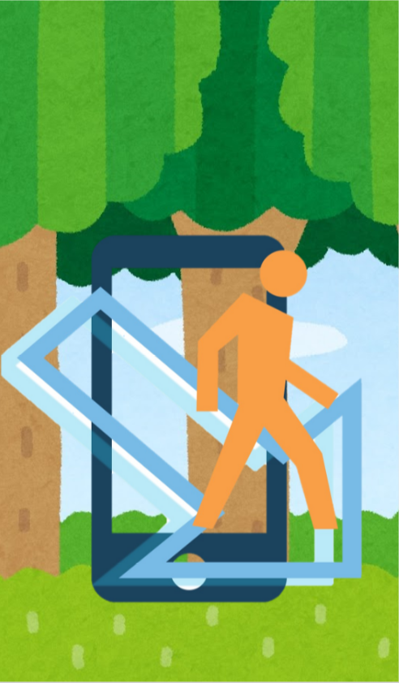
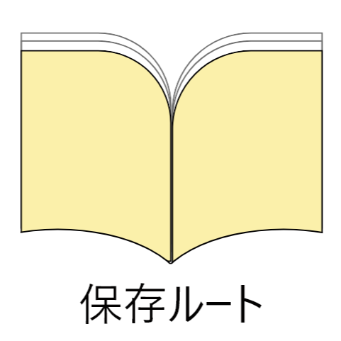
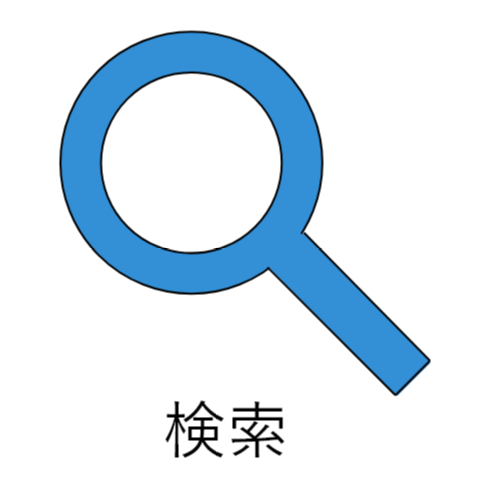
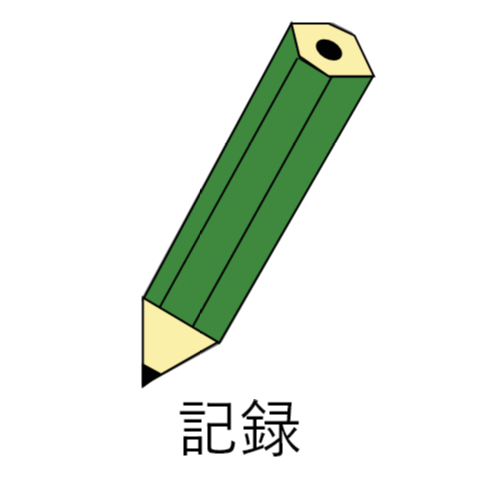
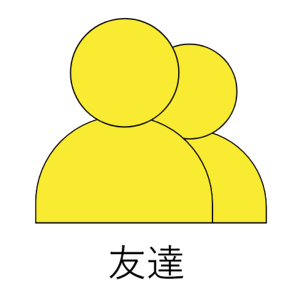
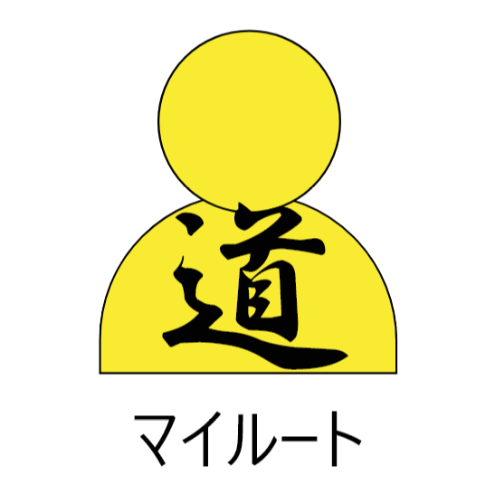
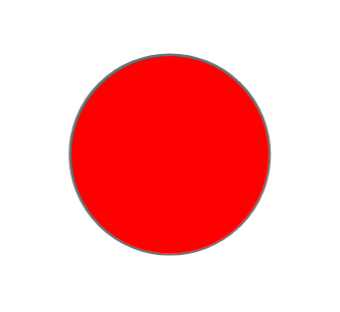
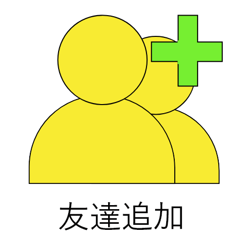
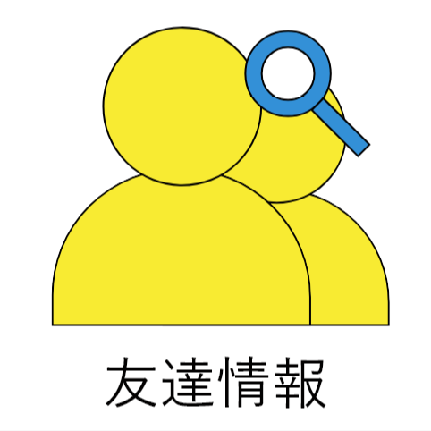

ホーム
見る
探す
録る
友達
問い合わせ

ログイン
ログイン
新規登録
新規アカウント登録
申請
初期設定
周りに表示される名前です
完了
ホーム
Logout




back
地図
経路を見る

自分の経路
ブックマーク
back
経路詳細
経路を探す
検索
道の記録

道の保存
ルートの保存名及び公開レベルを決めてください
非公開
友達のみ
だれでも
取り消し
決定
友達関連


友達登録
検索
自分のIDをコピー
QRを表示
友達
友達の経路
戻る
QRコード
問い合わせフォーム
件名
本文
問い合わせを送信する